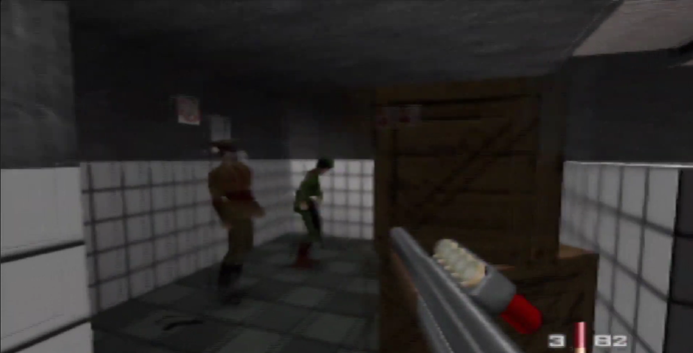
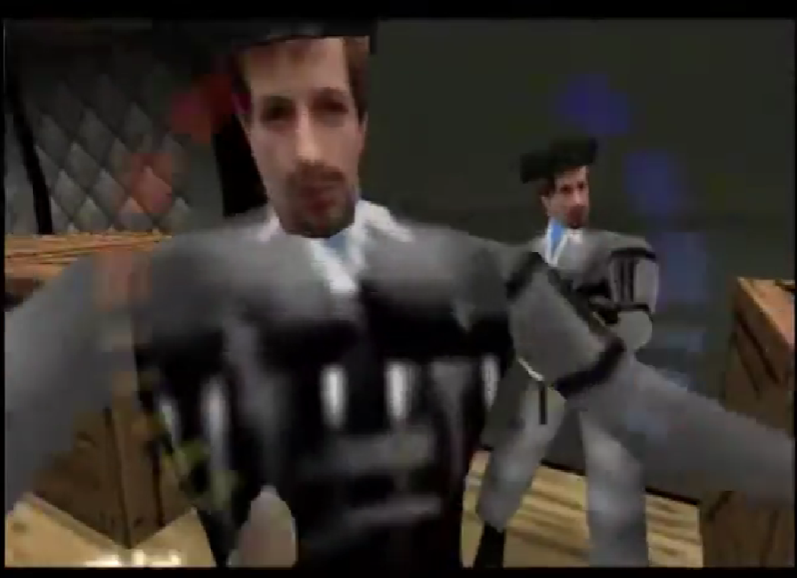
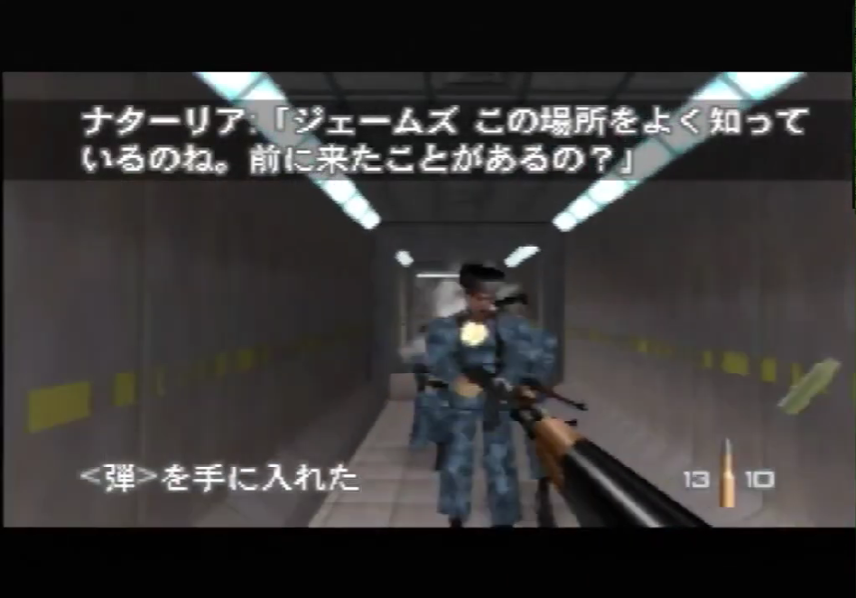
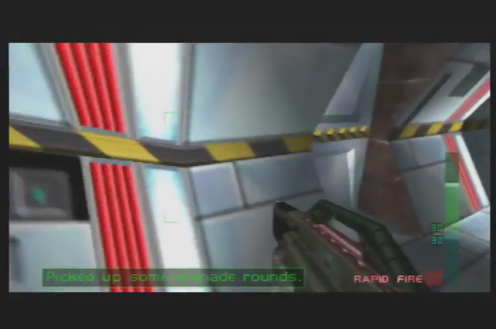
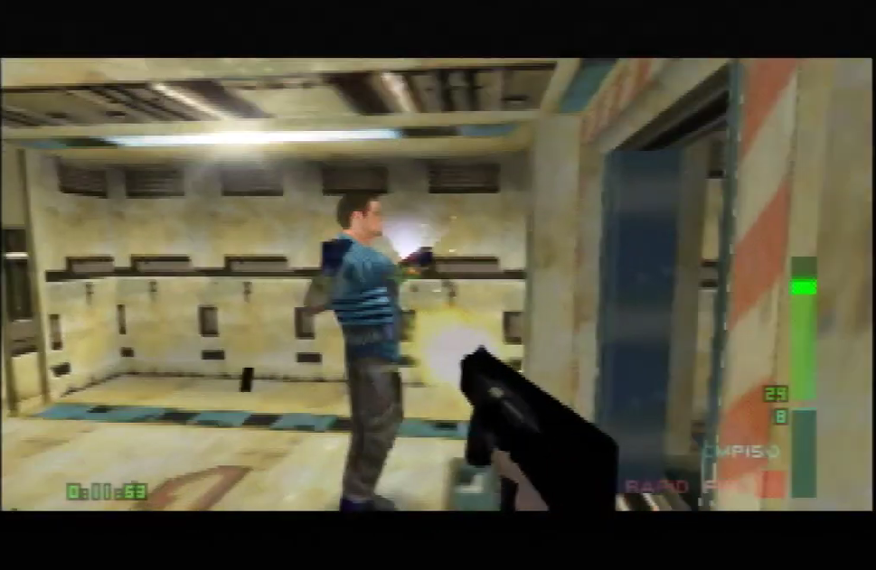
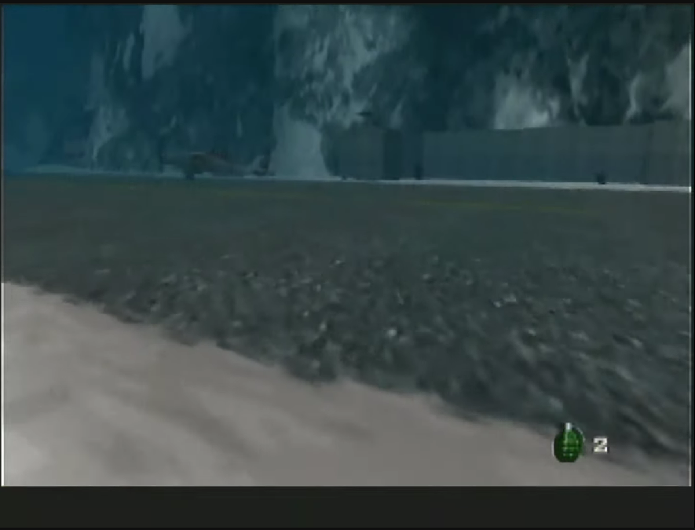
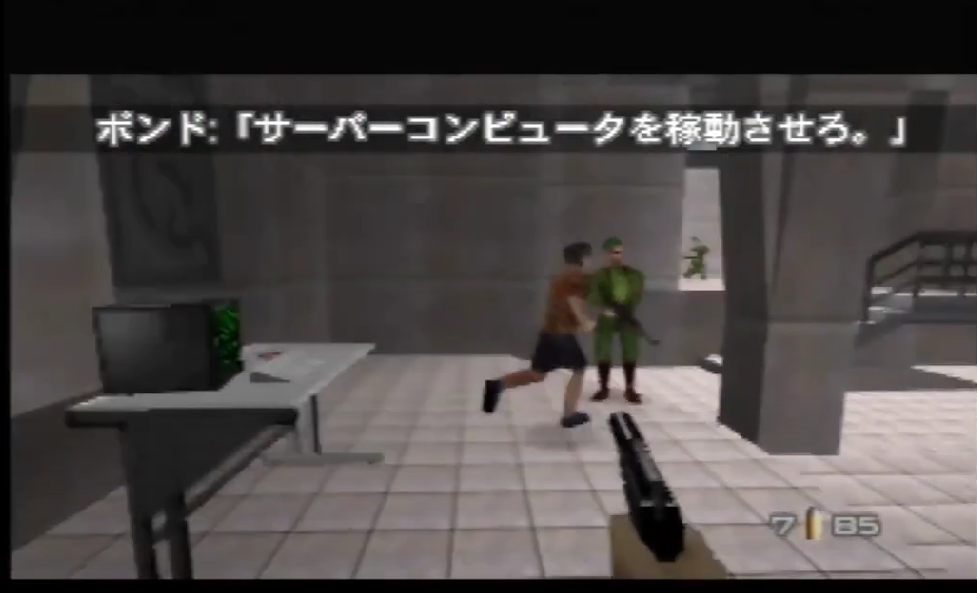

Open Projects
The listed projects involve ongoing efforts, either by me or someone else, aimed at simplifying an IL strategy, discovering a new trick, or learning something out of curiosity.
 The GoldenEye randomizer is an innovative mod that transforms the game into a refreshingly dynamic experience by scattering items across levels; imagine a circuit board on Silo placed somewhere on Dam. In this proposed mod, three random levels are unlocked at the very beginning of the game, one of which is Dam, and two others selected at random that are spaced a few levels apart in the game (e.g., Dam, B2, and Caverns). The goal would be to unlock and complete all 20 levels, but key items needed to progress past parts of a level are placed in random locations on other levels. For example, in this "Dam/B2/Caverns" selection, the keycard at the start on Facility could be placed somewhere on Caverns, so the player would not be able to beat Facility immediately after Dam, but rather have to play Caverns, find the "Facility keycard" in the level, and then revisit Facility (items would carry over across levels). Then, for example, the ignition key on Runway or large key on S1 could be located somewhere in Statue, so players would be required to explore the "post-B2" set of levels to complete Runway/S1. Such style of randomization could be designed in a way to require completing levels in unusual orders, revisiting levels multiple times, and exploring regions of levels not typically encountered during gameplay/speedruns. For added unpredictability, the mod would also shuffle guard weapons, guard health, body armor positions, alarm/camera positions, or even mirror levels. Logic would have to be designed to make any combination of logic possible such that players do not get softlocked.This project would involve the following positions:
- Designing the logic of the randomizer;
- Creating a ROM hack that implements such logic;
- Playtesting the ROM hack to ensure it is playable.
- Exploring the possibility of a similar style of randomizer for Perfect Dark, especially since a PC port for that game is currently available.
 Train Agent Zero Kill Challenge
Completing Train Agent with zero kills is an interesting challenge due to the dense presence of guards in several narrow corridors, and added complexity in taking out the locks at the end. As you cannot kill Ouromov, you must take out the locks at near-WR pace while avoiding hits from the two nearby ZMG guards who open the door. Unfortunately, when skipping guards at the beginning, the locked door to Ouromov takes several minutes to open. Understanding the reason behind the slow door opening, or finding a way to manipulate it, would enhance the enjoyment of the challenge.
 101 Perfect Dark Challenges
101 Perfect Dark Challenges
A series of challenges that require good knowledge and skills in the game to complete. For example, completing levels in reverse objective order, completing levels without passing through certain areas, completing a set of unusual tasks within a specific time limit, or completing levels with limited ammo using only GoldenEye weapons. Some even require playing through every stage in the game. This list is still a work in progress, and is being produced in collaboration with DeepDarknessSpain.

Improving the B2 00A WR Console Lure
The "TAS clipboard" lure used in the current Bunker 2 00 Agent 0:49 World Record run can save up to 2 seconds, but a significant problem associated with this strategy is a pile-up of guards near the 3rd last camera area. This makes it very difficult to hit the camera, since the autoaim tries to target nearby guards instead. To address this issue, the WR run uses a dual-weapon wielding trick to kill the guards in an attempt to "release" the autoaim quickly enough for the camera, but the trick remains ineffective as it is usually difficult to kill the offending guards fast enough. A better approach is to understand the path of these guards, and try to redirect their movement. This could significantly improve the consistency of this section of the level. A secondary, minor issue is the randomness in the position of the second safe key guard, i.e., the guard lured from the dossier room. The guard is easiest to kill when he is at the far end of the corridor just before the stairs, but he can be found in multiple positions: in front of the junction door, beside the documents room door, and sometimes alongside a clone before the stairs. What causes these random positions? Understanding both of these lures better could help lower the WR time.

Rescue PA's Shower Door Problem
Take a look at my Rescue Perfect Agent 2:34. I reach the shower room door at low-mid 1:20ish, which is standard pace to this part of the level. Both shower doors seem to open really slow at this pace, costing as much as 6 seconds, likely because the patrolling guard who opens it after being alerted is at the far end of the shower room. This "late door open" happens frequently, and will unfortunately be in the way of Rescue PA having a time in the low 2:20s. It may be worth doing Objective One (console room lure), Objective Two (X-Ray), and the keycard lure in a different order (even after the shower room door lure) such that you reach the shower door when the guard is nearby. Such combinations of strats need to be investigated to see whether they improve consistency of the level, particularly by affecting the shower guard's position, and may include:
- Watching more cinema to have the first lift shut on you;
- Doing the X-Ray objective after the keycard lure (as opposed to doing it at the very end);
- Manually doing the Objective One uplink to mitigate one major luck factor in the level;
- Doing the Objective One lure after the shower door lure.

Improved Consistency & Practice For the Fast G5 Door Lure
The G5 Building Special Agent World Record still uses the slower guard lure after the 2nd room. The faster lure, as seen in the Agent 0:32, can be a second faster, and is the key to lowering the Special Agent record to 0:35. Though the faster guard lure appears to be inconsistent, I have seen and personally encountered several successful attempts in a short span, indicating that there may be a trick™ to improve its consistency, such as punching the guard at a particular angle and/or after a particular amount of time, which needs to be investigated. Secondly, the faster lure results in the player reaching subsequent rooms much quicker, where patrolling guards are in "earlier" positions that are more awkward to handle, e.g., the patrolling guard in the buttons room is on the left side of the room, which means he must be killed after deactivating the buttons on the right side of the room. As it can take a long time to play out real runs to deal with these guard positions, a ROM in which the guard runs to and opens the door every try would help significantly with practice, and also be effective in determining whether there would be any increase in lag at the end of the level (post-cinema).
p2 sa orgy at end.

Runway 00 Agent Ultimate Practice ROM
The Runway 00 Agent World Record strategy has a steep learning curve, which could be significantly flattened with a well-designed practice ROM. Currently, it is difficult to know where to stand for each R-lean throw, and this difficulty can be compounded if the player struggles with R-leaning in general. Such a ROM would mark positions on the map for each throw, and have a single button that mimics an R-lean, such that players can learn each of these factors separately. Extra features could include statistics that show how close each throw is to its target.
Speedrunning Eye Tracker
An eye-tracker that lets viewers see where the player is looking during gameplay, such as a transparent moving bubble that corresponds to the player's gaze, could provide useful insight into a player's style of play that isn't typically noticed (how often do they look at their ammo? when do they look at the timer [in PD]? how quickly do they notice black-hat guards in their peripheral view during the Control protect? etc.) It might be possible to get something semi-robust working with just a good quality webcam or an Inertial Measurement Unit mounted on a headband.
Measuring Controller Action Per Level
A natural curiosity arises as to what levels require the most action, which can be measured by the amount of stick movement or frequency of button presses throughout a typical attempt of a level. Firmware that detects controller inputs already exist, so this project would only require tracking level attempts, and logging data on the stick movement and button presses. These data can then be compiled, analyzed, and then presented in a way to show which levels have the most action.

Fast Bunker 1 Boris Lure
Whiteted has written posts that meticulously describe Boris' pathing on Bunker 1. This information has allowed us to consider an "early Boris running" technique, which, in conjunction with the "early Boris shot", could be the breakthrough to a fresh untied on Bunker 1 00 Agent. There are, however, some tricky details to consider for such strategies to become viable on console, such as Boris consistently running into a grenade explosion from the patrolling guard in the main room if he starts running immediately, and ensuring he runs the correct path. An early test attempting an early lure (with cheats) can be seen here.
 Train System Differences
Train System Differences
Are there any significant differences between system versions (PAL / JP / NTSC) on Train? Does Bond get shot more on the PAL system, as claimed by multiple top players? These questions must be considered more seriously after the JP records were lowered to 0:56 (-3), 1:22 (-4), and 1:48 (-5) respectively, within one month of grinding. I wrote down some analysis in July 2023 after playing the level for almost a month straight, but subjective evaluations can never be taken as truth. How can we objectively measure differences between these versions?
Past / Solved Projects
Electrical and Computer
 Extraction Special Agent Out-Of-Bounds Bodyguards
Extraction Special Agent Out-Of-Bounds Bodyguards
It is possible to kill all bodyguards on the lower floors on Extraction from out-of-bounds, as explained in this tutorial by Wyst3r, with an attempt on console shown in this video. If done well, this strategy could be 2 seconds faster over running through the two mid-floor corridors, but there are several problems that must be dealt with on console:
- Ammo is a problem, as CMP-150 bullets are drained very quickly;
- It is difficult for the auto-aim to lock onto the 5th out-of-bounds bodyguard;
- The hovercopter can shoot Joanna off the ledge during the last couple of kills;
- No CMP-150 ammo after the mid-floor bodyguards means the Falcon 2 Scope must be used for the bodyguard room, which could be trickier to do quickly, and may result in the hovercopter being in an awkward position when doing the rocket shot on the roof.
 Faster Investigation Perfect Agent Zoom Strats
Faster Investigation Perfect Agent Zoom Strats
AceCorp is seeking individuals interested in problem-solving to help engineer an alternative, quicker, and more fun-to-play WR strategy for Investigation PA. Prerequisites include knowledge of both the Investigation SA & PA WR strats; understanding how guards are lured in GoldenEye or Perfect Dark is an asset. The current WR on Investigation Perfect Agent involves a "blind bot zoom", an off-screen zoom that requires guesstimating to time correctly. Additionally, with the standard WR route, the player can complete objectives and reach the lasers much faster than the bot by several seconds, so time is wasted sandbagging, e.g, Clemens' 2:26 kills guards in the first experiment room when he can ignore these guards and directly activate the terminals instead. Considering there are alternative/additional locations the bot can be zoomed to make it reach the lasers faster, strats such as directly activating the terminals should be used in conjunction with these alternative bot zooms instead. Our 2:25 fail shows that performing the hallway zoom instead of the "blind bot zoom", similar to the SA route, can result in quicker bot paces than the current WR strat. The hallway zoom is much easier to time because the player can see when the bot enters the hallway, thus removing the need to guesstimate. We also perform a zoom immediately after activating the bot, which saves approximately 2-3 seconds. Additionally, because we are at the far end of the hallway when the bot is just entering it, we will have time to zoom the bot at the first set of lasers, saving another two seconds. This could result in a 1:39-1:42 uplink, which is 2 to 5 seconds faster than Clemens’ 2:26. With our route, we directly activate the terminals in the first console room, but because we are so fast in doing so, the K7 guard isn’t lured outside his room after shutting down the experiment. To address this problem, we attempt to lure the K7 guard all the way to the end of the hallway instead, after the final two experiments, as shown in this Clemens video from five years ago. However, this K7 lure appears to be inconsistent. Your role is to find The Trick™ to lure the guard to the end of the hallway more often. We are also considering another strategy that involves going inside the K7 room after the first experiment to kill the guard so he does not become a concern later. Unfortunately, because he is still deep inside the room, as shown in the previously linked video, this takes several extra seconds, so making it back to the hallway corridor after grabbing the Night Vision to time the zoom becomes extremely tight. A workaround is to skip the zoom immediately after activating the bot, which would also make it easier for the K7 guard to make the lift cycle, but this results in a 2-3 second timeloss. A better approach would be to see whether the guard can at least be lured closer to the room's entrance on the way back from the first experiment, but this too requires finding The Trick.™, which you must figure out. Additional tasks, though not mandatory, can be finding small timesavers to make our alternative route easier to run.
 Faster Villa Special Agent Sniper Strat
Faster Villa Special Agent Sniper Strat
The Villa Special Agent World Record of 1:09 could be lowered by another couple of seconds by using a faster route to take out the snipers. This video shows a proof-of-concept, in which the last and second-last snipers are shot from the ground and upstairs balcony respectively, followed by entering the villa through the Agent route.
 Reliable Infiltration PA RTA Strategy
Reliable Infiltration PA RTA Strategy
The out-of-bounds (OoB) warp on Infiltration is a one-shot risky strategy that requires precise weapon-switch timing, and failing the clip on an RTA run is effectively the death of the run, as you will otherwise be quickly killed by the two high-accuracy MagSec guards, or have little time for a subsequent attempt. Yet, the OoB clip saves over thirty seconds compared to traditional RTA strategies, and makes survival for the hangar segment trivial. Is there a way to make the OoB clip easier to perform, or are there any alternative OoB positions that could save a similar amount of time?
External AutoSplitter
Most effective on short levels with no pausing, the AutoSplitter is a simple tool that makes use of reference images to trigger segment splits per level, e.g., the hallway entry on Facility Agent. A video demonstrating one can be seen here. Ultimately abandoned due to the lack of robustness, precision to in-game time, and tediousness in setting up splits for a level.
 Frigate 00 Agent Consistent Strategy
Frigate 00 Agent Consistent Strategy
The current WR strategy for Frigate 00 Agent has incredibly poor hostage completion odds, primarily caused by reliance on the "00A hostage" whose odds of escaping at WR speed are extremely low. The "engine room" strategy, used on my 1:08, significantly improves hostage escape odds, but demands exceptionally fast movement to match or surpass WR pace. Yet, this tradeoff may be worth considering, especially as a more skill-based challenge. Exploring alternative strategies, such as incorporating the reverse pipe warp route at the beginning, and documenting their odds, may also warrant investigation.
WAR! Agent 0:24 tricks
As early as 2005, I theorized the possibility of performing more Phoenix boosts on WAR Agent to make 0:24 viable, using this technique to get door TTs almost a second faster than Karl's 0:25, though without grabbing a Mauler, which is required for the King shot. However, boosts can be ineffective in short corridors, hard to perform in the corridor with "stretching walls", and the randommness of Skedar spawns makes finding an optimal spot to find a Mauler tricky. What combination of boosts and obtaining a Mauler could make for a straightforward 0:24 strategy that one could commit to?

Last update: 1 January 2024